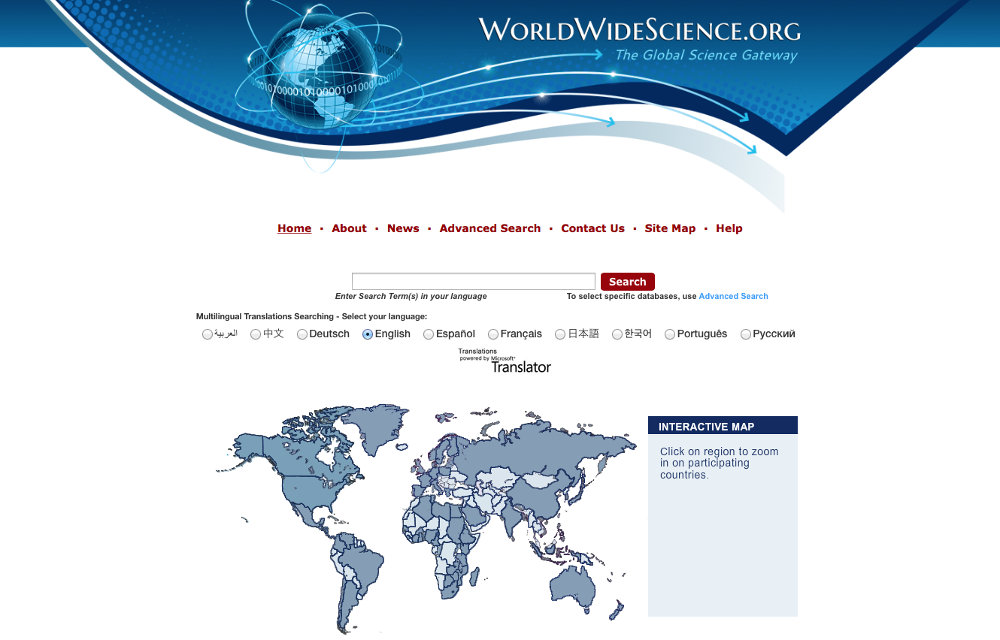
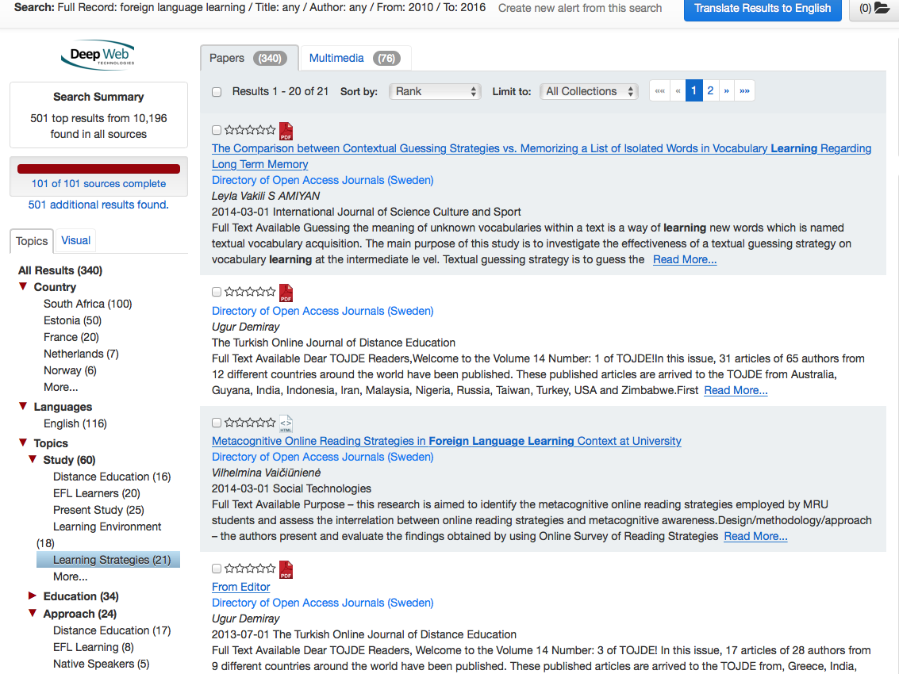

Actividades
- Conocer el metabuscador WorldWideScience.org.
- Desde esta ventana, puedes seleccionar la lengua en la que quieres trabajar en este metabuscador: da click en el idioma que prefieras.
- Una vez que has seleccionado la lengua de trabajo, podemos empezar con una búsqueda por tema. Escribe tu tema en la ventana junto al botón 'Search'. Al terminar, da click en ese botón. La búsqueda que realizamos en esta forma recupera resultados de todas las bases de datos inscritas en WorldWideScience.org
- Identificar sus componentes principales y el tipo de información que contiene.
- Identificar los métodos de búsqueda idóneos para este sitio.
- En la pantalla que aparece arriba, tecleamos 'foreign language learning', seleccionamos 'English' y damos click en el botón 'Search'. Recuperamos 112,032 resultados, ¡imposible leerlos todos!
- Así que activamos la opción de búsqueda con fechas y seleccionamos solamente los años 2010 a 2016. Obtenemos la siguiente pantalla:
- Realiza una búsqueda relacionada con tu tema de interés
- Copia y pega los datos de los resultados que te serán más útiles.
- Describe tu experiencia en este metabuscador (3-5 líneas).
- Elaborar un mapa que describa a grandes rasgos esta base de datos.
- Describe en forma gráfica los datos y características más relevantes de WorldWideScience.org puedes usar un mapa mental o un cuadro sinóptico. Compártelo en el foro y con tus compañer@s del Taller.
Para acceder a este motor de búsqueda global, vamos a teclear la url del sitio en la ventana de nuestro navegador:
WorldWideScience.org
Al entrar, encontrarás una ventana como la que sigue:
Nota: Si deseas ir directamente a una de las bases de datos inscritas, da click en el letrero 'Advanced Search'.
Veamos ahora un ejemplo de búsqueda básica en WorldWideScience.org
El metabuscador avisa que hay 2,415 resultados más aparte de los que ya está a punto de mostrar. Hay dos opciones: ignorarlos ( ya no los mostrará después), o añadirlos a la lista actual. En este ejemplo, se selecciona la opción 'ignore'.
Ahora aparece la siguiente ventana:
Esta segunda búsqueda refinada solamente por las fechas arroja 95,110 resultados, así que usaremos los criterios de la columna izquierda para refinar mucho más. Antes de hacerlo, es conveniente prestar atención a la columna de la derecha; allí se encuentran las alertas relativas al tema en dos sitios comúnmente visitados para iniciar búsquedas o para obtener información general: Wikipedia y EurekAlert (la fuente global de alertas sobre temas científicos). Al dar click sobre cualquiera de los títulos, se puede leer una reseña sobre el texto seleccionado. Ésta puede bajarse al equipo en formato PDF o enviarse por correo. (Véase la pantalla siguiente.)
Regresemos a la búsqueda en WorldWideScience.orgComo leíste al inicio de esta sesión, WorldWideScience.org tiene en común con WEB OF SCIENCE que al lado izquierdo de la pantalla aparece una columna de criterios para refinar las búsquedas. La diferencia es que en el metabuscador que visitamos hoy, cada vez que seleccionas uno de estos criterios, los resultados cambian para mostrarte solamente lo que ese criterio indica. En el ejemplo, seleccionamos del criterio 'Topic', el subcriterio 'Study' ('estudio', es decir, reporte de una investigación) y de allí, 'learning strategies'. La ruta aparece en la parte superior de la pantalla siguiente, son 21 resultados.
En la parte superior derecha, se muestra la opción de traducir todos los resultados a una de las 10 lenguas que este sitio maneja. En la esquina superior derecha aparece una carpeta donde puedes guardar los resultados que más se ajusten a tu necesidad de información.
En cada resultado se muestra un ícono para bajar el texto completo en formato PDF cuando éste es de acceso gratuito.
De esta forma, es posible recuperar los resultados de tu tema en diferentes formas. Recuerda que WorldWideScience.org colocará al inicio de cada lista los resultados más relevantes para tu búsqueda.
Al final de la página, encontrarás la opción de recuperar solamente documentos de acceso libre (gratuitos), puedes activarla como un criterio también.
Actividad 8.1
Desde tu Google drive, abre un documento y titúlalo APELLIDO.S8
Actividad 8.2